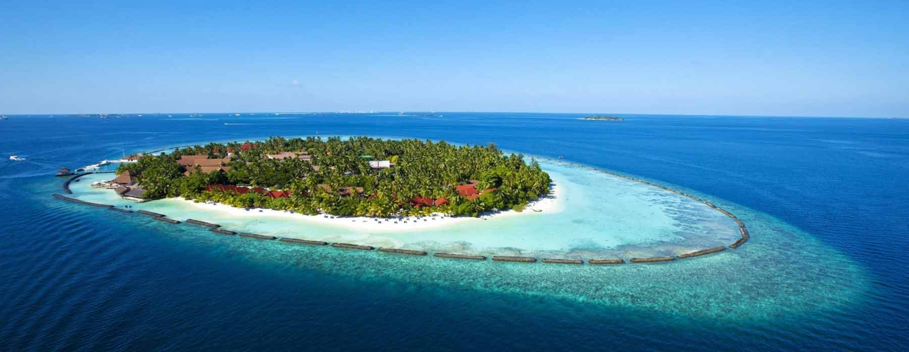

ANDMAN

The Andaman Islands are an Indian archipelago in the Bay of Bengal. These roughly 300 islands are known for their palm-lined, white-sand beaches, mangroves and tropical rainforests. Coral reefs supporting marine life such as sharks and rays make for popular diving and snorkeling sites. Indigenous Andaman Islanders inhabit the more remote islands, many of which are off limits to visitors.

HOW TO REACH ?
Nearest Airport: Veer Savarkar International Airport(Port Blair Airport)
Nearest Railway Station:(RHMA)RAHAMA,(PURI)PURI,(PRDP)PARADIP